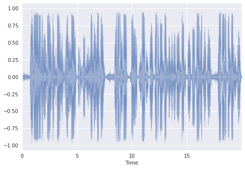

Simple Podcast Ad Insertion
This post outlines a simple time-domain energy-based algorithm for identifying ad opportunities in podcast audio. This post assumes basic knowledge of digital signal processing (DSP).
Context
Podcasting Company
Imagine you and I start a podcasting business. Quite simply, users are able to create and upload content (podcasts) which can be shared with the public. In other words, consumption of these podcasts is a free experience. Anyone can access and enjoy these podcasts.
Engineering Problem
We decide to monetize our business by inserting audio ads but how do we know when to interrupt the podcast content and play the audio ad? We call upon our engineering team to prototype a simple solution for a next day proof-of-concept (POC) demo. To be clear, our acceptance criteria is to find the least obtrusive ad insertion points. We don’t need to worry about cross-fading the content with the ad to make it sound as smooth as possible, etc. as that will be handled by a different engineering team.
Engineering Approach
Applied Machine Learning (ML) / Artificial Intelligence (AI)
We may be tempted to apply ML / AI to solve this problem. While they are attractive options, they usually require lots of data to learn from. We could explore the subset of unsupervised ML algorithms which don’t require any other added information, e.g., labels, but even those require time for tuning.
Google’s first rule of ML is to not use any ML and in our case this may be our best option as we need to deliver the POC by tomorrow.
Machine learning is cool, but it requires data. Theoretically, you can take data from a different problem and then tweak the model for a new product, but this will likely underperform basic heuristics. If you think that machine learning will give you a 100% boost, then a heuristic will get you 50% of the way there.
Applied Digital Signal Processing (DSP)
It turns out that we can bootstrap a simple algorithm by applying basic DSP techniques. If you don’t know DSP, I’d suggest taking a few courses to learn it as the applications are endless. Coursera offers exceptional foundational and useful music applications courses.
Solution / Algorithm
Approach
How would you define “less-obtrusive”? This is a subjective measure. Is a podcast audio ad break best defined by a change in conversation, sentiment, emotion, or something else? Is it just the lack of voice activity?
In the simplest case, we can develop a time-domain energy-based algorithm which may translate to one of many possible definitions on a case-by-case basis.
We can track the signal’s energy over time and insert ads where the energy is lower than some threshold (relative to the signal) for some amount of time (also relative to the signal). We can find several of these ad breaks or ad insertion points and order them by the largest amount of time under the threshold. Thus, the best ad insertion point this algorithm would find is defined by the maximal contiguous low energy (thresholded) streak in time.
If you’re into stock trading, you may see the resemblance this algorithm has to several technical indicators you may be familiar with.
Root-Mean-Square (RMS)
We will use RMS to proxy the de facto time-domain signal energy calculation. Generally, they’re trying to measure different spins of the same thing, the $L^2$ or euclidean norm. In order to see how RMS changes over time we apply a windowed version of the calculation yielding a new signal which shows how the energy of our signal changes over time. Why not just use a windowed version of the energy calculation? I’m using RMS because a windowed version of it is already implemented in the audio package I’m importing.
Amplitude Envelope (AE)
The AE is simply the maximum absolute value of a given window. It’s calculation also yields a signal that traces the signal’s upper envelope over time. Valerio Velardo’s implementation is all we need.
AE + RMS
We can combine these two measures to form our final algorithm. First we set the window and hop sizes that will be shared by both measures. Next, we calculate both measures which leave us with two new signals. We will use the AE as our measure of how the signal’s energy changes over time along with the standard deviation of the RMS measure as the threshold. Everytime the AE dips below the threshold we set a mark and only remove that mark once it breaks back over the threshold. We then add that segment to a temporary result buffer. Once we’ve done this for the entire AE, we can sort the segments descending based off the length of the segment. We can insert ads in the midpoints of these segments, where the largest segments are considered the best ad breaks or insertion points.
Demo
Here’s a fake podcast that I recorded with my voice:
Here’s the waveform:
Fig. 1

Here’s a fake audio ad that I recorded with my voice:
Here’s the waveform:
Fig. 2
Fig. 3

Fig 3. shows the time-domain waveform in blue, the AE in red, RMS in pink, +/- one standard-deviation of RMS in yellow, and three ad breaks or insertion points in green which vary in thickness (thicker lines are better breaks). The mel-spectrogram with the same hop-size is shown below. Since the ad breaks are present where the harmonics of my voice are not, the algorithm is inserting ads into places where I am not talking.
Here’s the result of simply stitching in the fake audio ad (my voice) into the fake podcast (my voice) that into the best of the three ad breaks the algorithm found.
Here’s there waveform: